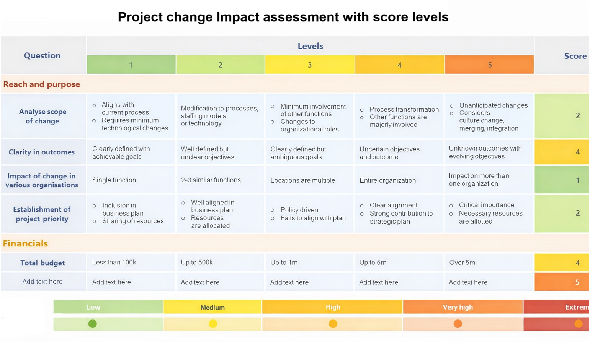

As the Project Manager or Scrum Master, you are responsible for leading the impact analysis. Do not approve any change before completing this evaluation.
Project change Impact assessment with score levels
This slide is 100% editable. Adapt it to your needs and capture your audience's attention.

5 Criteria: Timeline | Budget | Technical | Resources | Requirements
Image placeholder: Insert impact analysis diagram hereFor every Normal or Emergency change request, assess the following five areas:
| Criterion | Questions to Ask | Potential Impact Indicator |
|---|---|---|
| 1. Timeline | Will this push back our release date or sprint goal? | High = delays milestone by >1 week |
| 2. Budget | Does this require extra hours, contractors, or new tools? | High = exceeds 10% of project buffer |
| 3. Technical | Could this break existing features or introduce security flaws? | High = requires major refactoring |
| 4. Resources | Do we have the skilled people available to do this now? | High = key person is fully booked |
| 5. Requirements | Does this conflict with approved functional or non-functional requirements? | High = invalidates an acceptance criterion |
If any criterion is rated High, the change should typically go to the full Change Advisory Board (CAB) for review. Low-risk changes may be fast-tracked or pre-approved.
After your evaluation, record:
1. Change Management in Software Projects (TMS Outsource, 2025) - Section: "How is a Change Request Reviewed and Analyzed"
https://tms-outsource.com/blog/posts/what-is-change-management-in-software-projects/
2. Change Management in Software Projects (TMS Outsource, 2025) - Section: "How is a Change Request Approved or Rejected"
https://tms-outsource.com/blog/posts/what-is-change-management-in-software-projects/
Specifically, this section lists decision factors: "cost, timeline impact, technical risk, resource availability, and alignment with the project's acceptance criteria"
3. Change Management in Software Development Projects: A Comprehensive Guide (Teamhub, 2024) - Section: "Challenges in Change Management" (subsection "Inadequate Resources")
https://teamhub.com/blog/change-management-in-software-development-projects-a-comprehensive-guide/
4. Praxis. (2022, October 16). Change Impact Analysis [Video]. YouTube.